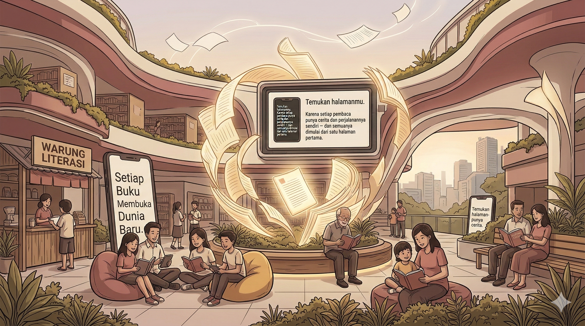

Temukan halamanmu. Karena setiap pembaca punya cerita dan perjalanannya sendiri — dan semuanya dimulai dari satu halaman pertama.
Mulai Membaca →
Angka-angka yang perlu kita ketahui bersama
Minat baca Indonesia menurut berbagai survei internasional berada di peringkat bawah dibandingkan negara-negara lain di dunia.
Rata-rata waktu yang dihabiskan masyarakat Indonesia untuk membaca setiap harinya masih sangat rendah dibanding negara maju.
Mayoritas generasi muda lebih memilih konten video dibandingkan membaca buku atau artikel panjang.
"Membaca adalah jendela dunia. Semakin banyak kamu membaca, semakin luas dunia yang kamu lihat."
Lebih dari sekadar hobi — membaca mengubah hidup
Membaca secara rutin melatih otak, memperluas kosakata, dan meningkatkan kemampuan berpikir kritis serta analitis.
Membaca secara rutin terbukti dapat membantu menurunkan tingkat stres dan membuat pikiran lebih tenang dan fokus.
Setiap buku membawamu ke dunia baru — perspektif berbeda, budaya lain, dan pengetahuan yang tak terbatas.
Pembaca yang baik cenderung menjadi penulis yang baik. Membaca mengajarkan struktur, gaya, dan diksi secara alami.
Membaca fiksi terbukti meningkatkan kemampuan berempati karena kita ikut merasakan pengalaman karakter dalam cerita.
Membaca sebelum tidur membantu otak beristirahat dari layar dan mempersiapkan tubuh untuk tidur lebih nyenyak.
Tidak ada kata terlambat untuk memulai
Tidak harus buku berat atau klasik. Mulailah dari genre yang kamu nikmati — novel, komik, self-help, atau bahkan majalah. Yang penting mulai!
Sisihkan 15–20 menit sehari khusus untuk membaca. Bisa pagi sebelum aktivitas, saat istirahat siang, atau malam sebelum tidur.
Manfaatkan waktu menunggu — di angkot, antrian, atau sela-sela kelas. Atau gunakan aplikasi baca di ponselmu seperti iPusnas atau Google Play Books.
Buat reading list sederhana. Melihat daftar buku yang sudah kamu selesaikan akan memberi kepuasan tersendiri dan memotivasimu untuk terus membaca.
iPusnas, Libby, dan Project Gutenberg menyediakan ribuan buku gratis. Kamu bisa membaca kapan saja dan di mana saja tanpa perlu membeli buku.
Bagikan buku favoritmu atau ceritakan pengalaman membacamu. Kami senang mendengar dari sesama pembaca! 📚